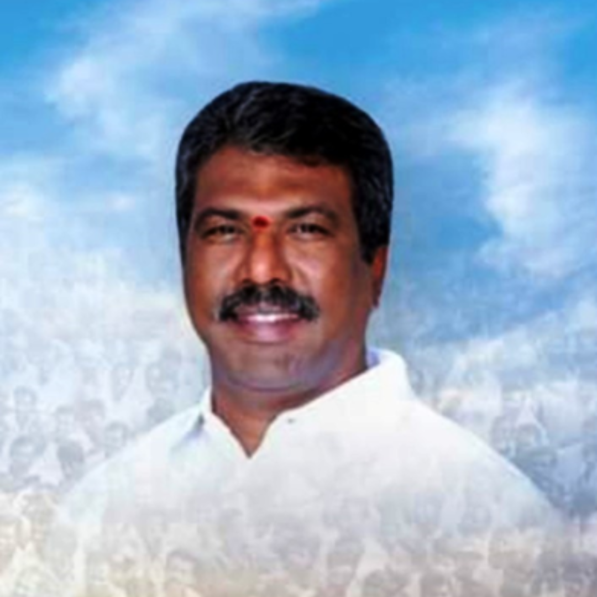

Sri. K. Srinivasa Rao
I consider it a great honor to be an essential part of this philanthropic institution. SIR C.RAMALINGA REDDY POLYTECHNIC has a history crowned with glory and achievements. It has regard for rural student development. It is a full-fledged polytechnic college caters the needs of present generation inn technical education. Our institution works to transform every individual into industrial professional. The institution is determined to give quality education. Faculty strive hard to give their best to the students with a motive of success.
Education makes children less dependent on others and opens doors to better jobs and career possibilities.